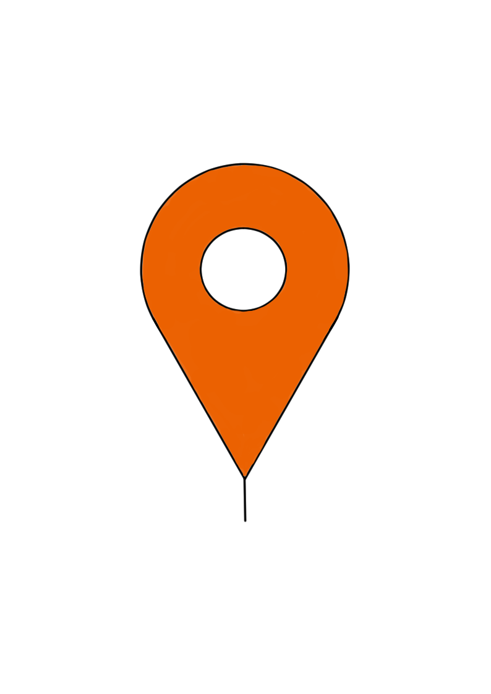

C'est important

Abonnés
"Il y a encore un malaise": on a pris un café en terrasse à Nice et c'était un peu trop calme

Les premières pistes de l'OGC Nice pour le mercato

Quels documents avoir pour se rendre en Italie dès ce mercredi 3 juin?

Abonnés
Opposée à l'alliance avec Olivier Bettati pour le second tour à Menton, l'UDI suspend Patrice Novelli
C'est en direct
Déconfinement, reprise, accord salarial... Le capitaine du RCT Charles Ollivon se confie

#Toulon